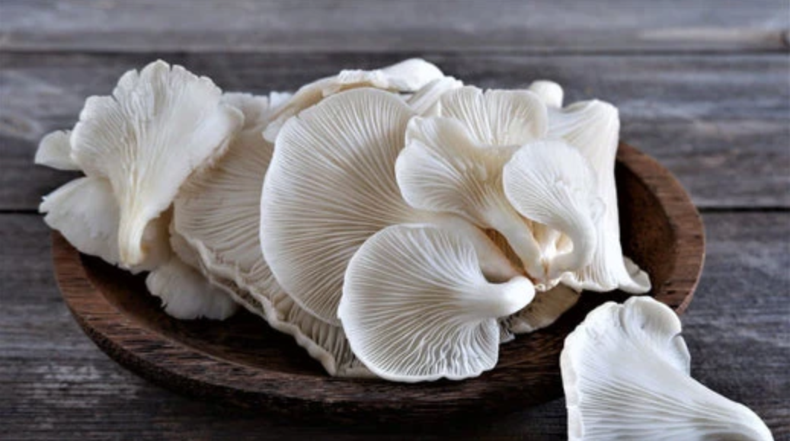
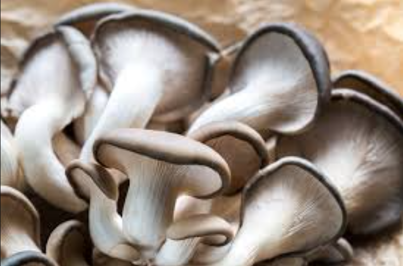
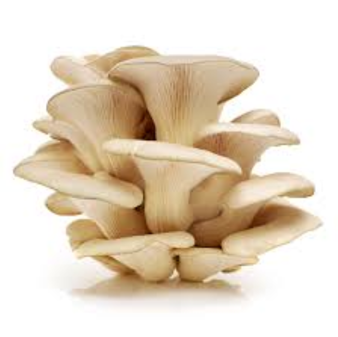

FUNGI: Fresh Oyster Mushrooms.
From Our Land, to Your Table.
Experience unparalleled freshness and quality, directly from our farm to your home. Sustainable, healthy, and simply delicious.
Order Fresh Now
About FUNGI: Our Commitment to Freshness

Welcome to FUNGI, a pioneering startup dedicated to bringing the freshest Oyster Mushrooms to your kitchen in Egypt. We are passionate about quality, sustainability, and direct-from-farm freshness.
Our mission is to solve the challenges of mushroom perishability and inconsistent quality. We achieve this by meticulously controlling every step of the process: from cultivating our Oyster mushrooms in a state-of-the-art, controlled environment, to ensuring their prompt delivery directly to you.
At FUNGI, freshness isn't just a promise; it's our philosophy. We believe in providing a healthy, delicious, and reliable source of Oyster mushrooms, cultivated with care and delivered with speed, ensuring you always receive the best.
Our Product: Premium Fresh Oyster Mushrooms

Premium Fresh Oyster Mushrooms
Our core offering and sole focus: **guaranteed fresh Oyster mushrooms**, harvested at peak maturity and delivered directly from our controlled farm. Perfect for enhancing any culinary creation, from stir-fries and soups to grilling and sautéing.
- Unmatched Freshness: Straight from our farm.
- Superior Quality: Meticulously cultivated for consistency.
- Nutrient-Rich: Packed with protein, vitamins, and minerals.
- Versatile Culinary Use: Elevates any dish.
Price: EGP 100/kg
Order Now via WhatsAppWhy Choose FUNGI? Our Unbeatable Value
Farm-to-Table Freshness
Directly from our controlled indoor farm to your kitchen, ensuring maximum freshness and flavor.
Consistent Premium Quality
Every batch of Oyster mushrooms is meticulously cultivated, meeting the highest standards of taste and texture.
Sustainable Local Growth
We are committed to eco-friendly practices and supporting the local economy by growing right here in Tanta.
Naturally Healthy
Our Oyster mushrooms are a natural source of protein, essential vitamins, and minerals, boosting your well-being.
Prompt Local Delivery
Fast and reliable delivery within Tanta ensures you receive your fresh mushrooms at their prime.
How to Order: Simple Steps to Get Your FUNGI
Step 1: Contact Us
Easily place your order via WhatsApp. Just click the button below!
Chat on WhatsAppStep 2: Specify Quantity
Tell us how many kilograms of fresh Oyster mushrooms you need. We're here to assist!
Step 3: Receive at Your Doorstep
We'll swiftly prepare and deliver your fresh order directly to your doorstep in Tanta.
Service Area Focus: Currently serving Tanta City, especially upscale areas, and health-conscious restaurants.
Get in Touch
WhatsApp: 0123456789